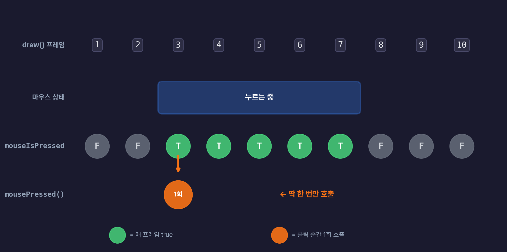

4주차 2교시 — 마우스·키보드 인터랙션
강의 아웃라인: week-04-outline 이전 교시: week-04-period1-student (if/else 조건문) 다음 교시: week-04-period3-student (학생 주도 실습: 인터랙티브 스케치)
| 항목 | 내용 |
|---|---|
| 대상 | P5.js 입문자 (테크아트 전공) |
| 소요 시간 | 45분 |
| 사전 준비 | 1교시 조건문 (if/else, 비교·논리 연산자,
dist()) |
-
mouseIsPressed와mousePressed()의 차이를 이해하고 활용할 수 있습니다 -
keyPressed()·key·keyCode로 키보드 입력을 처리할 수 있습니다 - 상태 변수와
!연산자로 토글 패턴을 구현할 수 있습니다 - 조건문·인터랙션·반복문을 결합해 인터랙티브 스케치를 설계할 수 있습니다
1교시 복습
1교시에서 조건 판단을 배웠습니다. 두 가지를 짚고 갑니다.
if (mouseX > width / 2) { 빨강 } else { 파랑 }— 마우스가 캔버스 오른쪽 절반에 있으면 빨강, 왼쪽이면 파랑. 마우스를 움직이면 배경색이 실시간으로 바뀝니다.===는 비교(같은지 확인),=는 대입(값을 넣기). 등호 3개가 비교입니다.
지금까지는 마우스를 움직이기만 했습니다. 2교시에서는 클릭하거나 키보드를 누르면 반응하는 방법을 배웁니다. 1교시의 조건문 + 2교시의 이벤트 = 본격적인 인터랙티브 작품입니다.
심화 개념 1 — 마우스 인터랙션
mouseIsPressed —
누르고 있는 동안
mouseIsPressed는 마우스 버튼이 눌려 있는지를 나타내는
값입니다. mouseX, mouseY처럼 P5.js가 자동으로
관리하는 시스템 변수인데, 숫자가 아니라
boolean입니다.
| 상태 | mouseIsPressed 값 |
|---|---|
| 마우스 버튼을 누르고 있는 동안 | true |
| 마우스 버튼을 안 누르고 있을 때 | false |
draw()는 1초에 약 60번 실행되므로,
if (mouseIsPressed) 체크도 1초에 60번 일어납니다. 그래서
누르고 있는 동안 매 프레임 반응할 수 있습니다.
function setup() {
createCanvas(400, 400);
}
function draw() {
background(220);
if (mouseIsPressed) {
// 마우스를 누르고 있는 동안 원 그리기
fill(0, 150, 255);
ellipse(mouseX, mouseY, 30, 30);
}
}원이 한 개만 보이고 사라집니다. background(220)이 매
프레임 덮어쓰니까요. background()를
setup()으로 옮기면 그린 원이 쌓입니다.
function setup() {
createCanvas(400, 400);
background(220); // setup()으로 이동: 한 번만 실행
}
function draw() {
// background() 없음 → 이전 프레임이 남아있음 (잔상)
if (mouseIsPressed) {
noStroke();
fill(0, 150, 255);
ellipse(mouseX, mouseY, 30, 30);
}
}마우스를 누르면서 움직이면 파란 원이 쌓여서 그림이 그려집니다. 간단한 드로잉 도구입니다.
console.log()
— 값을 눈으로 확인하기 (디버깅 도구)
console.log()는 변수에 어떤 값이 들어 있는지
콘솔 창에 출력하는 함수입니다. P5.js Web Editor 코드
아래쪽에 콘솔 창이 있습니다.
function setup() {
createCanvas(400, 400);
}
function draw() {
background(220);
// 콘솔에 마우스 정보 출력
console.log("mouseX:", mouseX, "mouseY:", mouseY, "눌림:", mouseIsPressed);
}콘솔 출력 예시:
mouseX: 152 mouseY: 203 눌림: false
mouseX: 155 mouseY: 201 눌림: false
mouseX: 160 mouseY: 198 눌림: true ← 클릭하니까 true!
mouseX: 162 mouseY: 195 눌림: true마우스를 움직이면 숫자가 바뀌고, 클릭하면
mouseIsPressed가 true로 바뀌는 것을 확인할 수
있습니다.
새로운 변수를 만나면 먼저 console.log()로
확인하는 습관을 들이세요. 코드가 작동하지 않을 때 값을 출력해
보면 원인을 찾기 쉽습니다. 단, draw() 안에 넣으면 1초에 약
60줄이 출력되니, 확인이 끝나면 주석 처리하세요.
pmouseX/pmouseY
— 부드러운 선 드로잉
원이 뚝뚝 끊겨서 그려집니다. 빠르게 움직이면 점 사이가 벌어집니다.
부드러운 선으로 그리려면 pmouseX,
pmouseY를 씁니다. pmouseX는 이전
프레임(previous)에서의 마우스 x좌표입니다.
function setup() {
createCanvas(400, 400);
background(220);
}
function draw() {
if (mouseIsPressed) {
stroke(0, 150, 255);
strokeWeight(4);
// 이전 위치 → 현재 위치로 선 긋기
line(pmouseX, pmouseY, mouseX, mouseY);
}
}P5.js가 매 프레임 ’지난 위치’와 ’지금 위치’를 기억하므로, 둘을 이어주면 연속적인 선이 됩니다.
빠르게 움직이면 선이 굵어지고, 느리게 움직이면 가늘어지게 하려면
어떻게 할까요? 힌트:
dist(mouseX, mouseY, pmouseX, pmouseY)로 속도를 구할 수
있습니다. 3교시에서 시도합니다.
mousePressed() — 클릭 한
번
mousePressed()는 함수입니다. 마우스를
한 번 클릭할 때 한 번만 실행됩니다.
mouseIsPressed는 draw() 안에서
if문으로 쓰지만, mousePressed()는
draw() 밖에 별도 함수로 작성합니다.
비유하자면, mouseIsPressed는 매 프레임 직접 ’지금
눌렸는가?’를 확인하는 방식이고, mousePressed()는 P5.js가
클릭 순간에 자동으로 호출해주는 이벤트 함수입니다.
function setup() {
createCanvas(400, 400);
}
function draw() {
// draw()에서는 특별히 할 일 없음
}
// draw() 밖에 별도로 작성!
function mousePressed() {
background(random(255), random(255), random(255));
}클릭할 때마다 배경색이 무작위로 바뀝니다. 꾹 눌러도 한 번만
실행됩니다. (random(255)는 0~255 사이 무작위 숫자를 만드는
함수입니다. 5주차에서 자세히 배웁니다.)
mouseIsPressed
vs mousePressed() 비교
mouseIsPressed |
mousePressed() |
|
|---|---|---|
| 유형 | 시스템 변수 (boolean) | 이벤트 함수 |
| 위치 | draw() 안에서 if문으로 |
draw() 밖에 별도 정의 |
| 동작 | 누르는 동안 계속 실행 | 클릭 시 1회 실행 |
| 용도 | 드로잉, 연속 동작 | 색상 전환, 토글 |

draw()가 1초에 60번 돌면서 매번
mouseIsPressed를 체크합니다. 누르고 있는 동안은 계속
true. 반면 mousePressed() 함수는 누르는
그 순간 한 번만 호출됩니다. 연속 동작은
mouseIsPressed, 한 번씩 전환은
mousePressed().
마우스를 꾹 누르고 있으면, mousePressed() 함수는 계속
실행될까요 아니면 한 번만 실행될까요?
답: 한 번만 실행됩니다. 꾹 누르고 있어도 한 번. 떼고 다시 눌러야 또 한 번 실행됩니다.
mouseButton —
왼쪽/오른쪽 클릭 구분
왼쪽 클릭과 오른쪽 클릭을 구분하려면 mouseButton을
씁니다. 왼쪽은 LEFT, 오른쪽은 RIGHT.
function setup() {
createCanvas(400, 400);
background(220);
}
function draw() {
if (mouseIsPressed) {
noStroke();
if (mouseButton === LEFT) {
fill(0, 150, 255); // 왼쪽 클릭: 파란색 그리기
ellipse(mouseX, mouseY, 20, 20);
} else if (mouseButton === RIGHT) {
fill(220); // 오른쪽 클릭: 지우기
ellipse(mouseX, mouseY, 40, 40);
}
}
}LEFT, RIGHT는 P5.js가 제공하는 상수입니다.
왼쪽은 그리기, 오른쪽은 지우기.
심화 개념 2 — 키보드 인터랙션
키보드는 마우스와 패턴이 거의 같습니다.
keyPressed() —
키를 누를 때 1회 실행
mousePressed()와 같은 패턴입니다.
draw() 밖에 별도 함수로 작성하고, 키를
누를 때 한 번 실행됩니다.
function setup() {
createCanvas(400, 400);
background(220);
}
function draw() {
// draw()는 배경 유지
}
function keyPressed() {
// 키를 누를 때마다 랜덤 위치에 원 그리기
fill(random(255), random(255), random(255));
ellipse(random(width), random(height), 50, 50);
}mousePressed() → keyPressed(). 같은
패턴입니다.
key와
keyCode — 먼저 console.log()로 확인하기
어떤 키를 눌렀는지 알려면 key와 keyCode를
씁니다. 어떤 값인지 먼저 콘솔에 출력해 보면 이해하기
쉽습니다.
function keyPressed() {
console.log("key:", key, "keyCode:", keyCode);
}콘솔 출력 — 여러 키를 눌러보면:
key: r keyCode: 82 ← 문자 키: key에 글자가 들어옴
key: g keyCode: 71
key: 1 keyCode: 49
key: ArrowUp keyCode: 38 ← 화살표 키: key에 특수 키 이름 문자열
key: Enter keyCode: 13 ← 특수 키: keyCode 숫자로 구분문자 키는 key에 글자가 깔끔하게 들어옵니다. 화살표·Enter
같은 특수 키는 key에 긴 문자열이 들어오니,
keyCode 숫자로 비교하는 게 편합니다.
key — 어떤 키를
눌렀는지
특정 키에만 반응하는 코드를 만들어봅니다. 키를 누를 때마다 배경색을
바꾸려면 색상을 변수에 저장해야 하는데, fill(255, 0, 0)은
바로 칠하는 명령이라 변수에 넣을 수 없습니다. 색상을 값으로
만들어 저장하려면 color() 함수를 씁니다.
color(255, 0, 0) // 빨간색을 "값"으로 만듦 → 변수에 저장 가능
fill(255, 0, 0) // 빨간색으로 바로 "칠함" → 저장 불가let bgColor = 220;
function setup() {
createCanvas(400, 400);
}
function draw() {
background(bgColor);
}
function keyPressed() {
if (key === 'r') {
bgColor = color(255, 0, 0); // r키: 빨강
} else if (key === 'g') {
bgColor = color(0, 255, 0); // g키: 초록
} else if (key === 'b') {
bgColor = color(0, 0, 255); // b키: 파랑
}
}key === 'r' — 1교시에서 배운 ===가 문자
비교에도 쓰입니다. 소문자로 비교하세요.
CapsLock이 켜져 있으면 key에 대문자가 들어가서
key === 'r'이 반응하지 않을 수 있습니다. 코드가 맞아
보이는데 키 입력이 동작하지 않을 때는 CapsLock이 꺼져 있는지
확인하세요.
keyCode — 특수 키
(화살표 등)
문자 키는 key로 되지만, 화살표 키 같은
특수 키는 keyCode를 씁니다.
| 키 종류 | 사용할 것 | 이유 |
|---|---|---|
글자/숫자 키 (a, r, 1) |
key |
문자로 직접 비교 가능 |
| 화살표, Enter, Shift 등 | keyCode |
화면에 표시되는 문자가 없음 |
let x = 200;
let y = 200;
function setup() {
createCanvas(400, 400);
}
function draw() {
background(220);
fill(0, 150, 255);
ellipse(x, y, 40, 40);
}
function keyPressed() {
if (keyCode === UP_ARROW) {
y -= 10; // 위로 10px 이동
} else if (keyCode === DOWN_ARROW) {
y += 10;
} else if (keyCode === LEFT_ARROW) {
x -= 10;
} else if (keyCode === RIGHT_ARROW) {
x += 10;
}
}UP_ARROW, DOWN_ARROW,
LEFT_ARROW, RIGHT_ARROW는 P5.js가 제공하는
상수입니다. 숫자를 외울 필요 없이 이름으로 씁니다
(따옴표 없이, 대문자에 밑줄).
마우스와 키보드 이벤트 정리표
| 마우스 | 키보드 | 동작 |
|---|---|---|
mouseIsPressed |
keyIsPressed |
누르고 있는 동안 true |
mousePressed() |
keyPressed() |
누를 때 1회 실행 |
mouseButton |
key |
어떤 버튼/키를 눌렀는지 |
| — | keyCode |
누른 키의 코드 (UP_ARROW 등) |
마우스와 키보드가 대칭 구조입니다. 마우스 패턴을 알면 키보드도 바로 이해됩니다.
화살표 키로 원을 움직이는 코드에서, keyPressed() 대신
keyIsPressed와 keyCode를 draw()
안에 쓰면 어떻게 달라질까요?
답: 키를 누르고 있는 동안 계속
이동합니다. keyPressed()는 한 번 눌러야 한 번 이동하지만,
draw() 안에서 keyIsPressed로 확인하면 키를
누르는 동안 계속 이동합니다.
심화 개념 3 — 상태 변수로 토글 구현
토글 — 클릭할 때마다 모드가 바뀌는 것.
boolean 토글
‘클릭하면 빨강 ↔ 파랑이 전환되는’ 기능을 만듭니다. 직관적으로는 이렇게 쓸 수 있습니다.
// 직관적이지만 긴 버전
function mousePressed() {
if (isRed === false) {
isRed = true;
} else {
isRed = false;
}
}이것을 한 줄로 줄일 수 있습니다.
// 간단한 버전
function mousePressed() {
isRed = !isRed; // true ↔ false 토글!
}isRed = !isRed. 1교시에서 배운 !(NOT
연산자)로 true면 false, false면
true로 뒤집습니다. 전체 코드:
let isRed = true; // 상태 변수: draw() 밖에 선언
function setup() {
createCanvas(400, 400);
}
function draw() {
if (isRed) {
background(255, 0, 0); // isRed가 true → 빨강
} else {
background(0, 0, 255); // isRed가 false → 파랑
}
}
function mousePressed() {
isRed = !isRed; // true ↔ false 토글!
}isRed 변수를 draw() 밖 맨
위에 선언했습니다. draw() 안에 쓰면 매 프레임
true로 초기화돼서 토글이 안 됩니다.
숫자 상태 변수: 방향키로 브러시 크기 변경
boolean 말고 숫자 변수도 상태로 쓸 수 있습니다.
let brushSize = 20; // 상태 변수: 브러시 크기
function setup() {
createCanvas(400, 400);
background(220);
}
function draw() {
if (mouseIsPressed) {
noStroke();
fill(0, 150, 255);
ellipse(mouseX, mouseY, brushSize, brushSize);
}
}
function keyPressed() {
if (keyCode === UP_ARROW) {
brushSize += 5; // 위 방향키: 크기 증가
} else if (keyCode === DOWN_ARROW) {
brushSize -= 5; // 아래 방향키: 크기 감소
}
// 최소 크기 보장
if (brushSize < 5) {
brushSize = 5;
}
}마우스(드로잉) + 키보드(크기 조절) + 조건문(상태 판단)이 결합돼 상태 관리를 합니다.
숫자 상태 변수 확장: 클릭 카운터
클릭할 때마다 숫자가 올라가는 패턴입니다.
let count = 0;
function setup() {
createCanvas(400, 400);
textAlign(CENTER, CENTER);
textSize(64);
}
function draw() {
background(220);
text(count, 200, 200); // 화면에 숫자 표시
}
function mousePressed() {
count = count + 1; // 클릭할 때마다 1 증가
}토글은 true ↔ false 두 값을 오가고, 카운터는 한
방향으로 계속 쌓입니다. 이 ‘누적’ 패턴은 다음 주
애니메이션에서 핵심이 됩니다
(x = x + speed도 같은 구조).
변수로 상태 저장 → 이벤트로 상태 변경 → draw()에서 상태 기반 렌더링 — 이 패턴이 P5.js 인터랙티브 코딩의 기초입니다. 앞으로 계속 씁니다.
심화 개념 4 — 2교시 핵심 정리
| 주차 | 배운 것 |
|---|---|
| 2주차 | 변수 (let), 도형,
mouseX/mouseY |
| 3주차 | for문 (반복), HSB 색상 |
| 4주차 1교시 | if/else, 비교·논리 연산자, dist() |
| 4주차 2교시 | 마우스/키보드 이벤트, 상태 변수 |
- 변수 vs 이벤트 함수:
mouseIsPressed(매 프레임 체크)와mousePressed()(한 번 호출)는 다르다 - 상태 변수 패턴: 변수 선언(draw 밖) → 이벤트로 변경 → draw()에서 렌더링
- 마우스와 키보드는 대칭: 마우스 패턴을 알면 키보드도 같은 구조
실전 사례
사례 1: 인터랙티브 드로잉
mouseIsPressed로 그리기 + key로 색상
전환.
let brushColor;
function setup() {
createCanvas(400, 400);
background(255);
brushColor = color(0, 150, 255); // 기본: 파랑
}
function draw() {
if (mouseIsPressed) {
noStroke();
fill(brushColor);
ellipse(mouseX, mouseY, 20, 20);
}
}
function keyPressed() {
if (key === 'r') {
brushColor = color(255, 0, 0); // r: 빨강
} else if (key === 'g') {
brushColor = color(0, 200, 0); // g: 초록
} else if (key === 'b') {
brushColor = color(0, 150, 255); // b: 파랑
} else if (key === 'c') {
background(255); // c: 캔버스 지우기
}
}마우스 드래그로 그리고,
r/g/b로 색상 변경,
c로 화면 초기화. 심화 개념 1의 드로잉 + 심화 개념 2의
키보드 색상 전환의 조합입니다.
사례 2: 리액티브 패턴
3주차 for문 패턴이 마우스 위치에 반응합니다.
function setup() {
createCanvas(400, 400);
colorMode(HSB, 360, 100, 100);
}
function draw() {
background(0, 0, 10);
noStroke();
for (let i = 0; i < 10; i++) {
for (let j = 0; j < 10; j++) {
let x = i * 40 + 20;
let y = j * 40 + 20;
let d = dist(mouseX, mouseY, x, y);
// 마우스 가까이: 크고 밝게 / 멀리: 작고 어둡게
if (d < 100) {
let size = map(d, 0, 100, 35, 10);
let brightness = map(d, 0, 100, 100, 30);
fill((i + j) * 25, 80, brightness);
ellipse(x, y, size, size);
} else {
fill(0, 0, 30);
ellipse(x, y, 10, 10);
}
}
}
}코드를 한 줄씩 읽어봅니다.
- 격자 만들기 (3주차):
for문 두 개를 중첩해 10×10 = 100개 점 위치를 계산. - 거리 재기 (4주차 1교시):
dist(mouseX, mouseY, x, y)로 마우스에서 각 점까지의 거리를 구함. - 조건 분기 (4주차 1교시):
if (d < 100)로 가까운 것/먼 것을 구분. - 크기·밝기 변환:
map(d, 0, 100, 35, 10)로 거리(0~100)를 크기(35~10)로 변환.map()은 “숫자 범위를 다른 범위로 바꿔주는 변환기”입니다 (5주차에서 정식으로 배움). - 결과: 마우스 근처 원은 크고 밝고, 먼 원은 작고 어둡게 — 빛이 퍼지는 효과.
3주차 for문 격자 + 4주차 dist() 조건 + HSB 색상. 새로운
건 map() 하나뿐입니다.
사례 3: 간단한 버튼 UI
1교시에서 배운 dist()로 원형 버튼을
만듭니다. 이 원을 클릭하면 배경색이 바뀝니다.
let bgColor = 220;
function setup() {
createCanvas(400, 400);
}
function draw() {
background(bgColor);
// 버튼 그리기
if (dist(mouseX, mouseY, 200, 200) < 40) {
fill(255, 100, 100); // 마우스 올리면: 밝은 빨강 (hover)
} else {
fill(200, 50, 50); // 평소: 어두운 빨강
}
noStroke();
ellipse(200, 200, 80, 80);
// 버튼 위에 텍스트
fill(255);
textAlign(CENTER, CENTER);
textSize(16);
text("Click!", 200, 200);
}
function mousePressed() {
// 버튼 영역 안에서 클릭했는지 확인
if (dist(mouseX, mouseY, 200, 200) < 40) {
bgColor = color(random(255), random(255), random(255));
}
}1교시의 dist() + 2교시의 mousePressed().
dist()로 ‘이 원 안에 마우스가 있는지’ 판별하고,
mousePressed()에서 ‘클릭했을 때 원 안이면 배경색 변경’. 이
패턴이 버튼의 기본입니다. hover 효과는
draw() 안에서 매 프레임 체크, 클릭 반응은
mousePressed()에서 한 번 체크합니다.
흔한 실수 & 트러블슈팅
실습 전에 자주 하는 실수들을 미리 알아둡니다.
| 실수 | 증상 | 해결 |
|---|---|---|
mouseIsPressed와 mousePressed() 혼동 |
한 번만 동작해야 하는데 계속 실행됨, 또는 그 반대 | 연속 동작 = mouseIsPressed (draw 안), 1회 =
mousePressed() (draw 밖) |
draw() 안에 이벤트 함수 작성 |
오류가 나거나 동작하지 않음 | mousePressed(), keyPressed()는 반드시
draw() 밖에 별도 함수로 |
상태 변수를 draw() 안에 선언 |
토글이 작동하지 않음, 값이 매 프레임 초기화 | let 선언은 반드시 draw()
밖 맨 위에 |
| CapsLock 켜짐 | key === 'r'이 반응하지 않음 |
CapsLock 끄기, 또는 key === 'r' \|\| key === 'R'로 둘
다 체크 |
keyCode에 'UP_ARROW' (따옴표) |
작동하지 않음 | UP_ARROW는 문자열이 아니라 상수 —
따옴표 없이 |
특히 — draw() 안에
function mousePressed()를 쓰는 실수가 많습니다. 반드시
draw()의 중괄호 밖, 같은 들여쓰기 레벨에
나란히 써야 합니다.
// 잘못된 예
function draw() {
function mousePressed() { // draw 안에 작성하지 않습니다!
// ...
}
}
// 올바른 예
function draw() {
// ...
}
function mousePressed() { // draw와 같은 레벨!
// ...
}3교시 실습 안내
3교시에서 오늘 배운 조건문 + 마우스/키보드 인터랙션으로 인터랙티브 스케치를 만듭니다.
실습 과제
세 가지 방향 중 하나를 골라 시작합니다 (자유롭게 섞어도 됩니다).
| 방향 | 설명 | 핵심 기술 |
|---|---|---|
| A. 인터랙티브 드로잉 도구 | 마우스로 그리기 + 키보드로 도구 전환 | mouseIsPressed, keyPressed(),
key |
| B. 인터랙티브 패턴 | 3주차 패턴에 마우스/키보드 반응 추가 | for문, dist(),
mousePressed() |
| C. 리액티브 비주얼 | 마우스 위치에 실시간 반응하는 그래픽 | mouseX/Y, dist(),
if/else |
어떤 방향이든 핵심은 같습니다 — 입력 → 조건 판단 → 시각 변화.
필수 요구사항
| # | 요구사항 |
|---|---|
| 1 | if/else 조건문 1개 이상 사용 |
| 2 | 마우스 또는 키보드 인터랙션 1개 이상 |
| 3 | 사용자 입력에 따라 시각적 변화가 발생 |
| 4 | draw()를 사용하여 실시간 반응 |
4주차에는 실습과제 제출이 없으니 부담 없이 실험해보세요.
도전 과제 (선택)
pmouseX/pmouseY와dist()로 마우스 속도에 따라 선 굵기가 바뀌는 필압 드로잉mouseButton으로 왼쪽=그리기, 오른쪽=지우기 기능 추가- 클릭 카운터(
count++)를 화면에 표시하면서 클릭 횟수에 따라 비주얼 변화
스타터 코드
// === 상태 변수 (draw() 밖에 선언) ===
let brushColor;
// === setup(): 한 번 실행 ===
function setup() {
createCanvas(400, 400);
background(255);
brushColor = color(0, 150, 255);
}
// === draw(): 매 프레임 실행 (1초에 약 60번) ===
function draw() {
// 여기에 그리기 코드
// 예: 마우스를 누르면 원 그리기
if (mouseIsPressed) {
noStroke();
fill(brushColor);
ellipse(mouseX, mouseY, 20, 20);
}
}
// === mousePressed(): 클릭 시 1회 ===
function mousePressed() {
// 여기에 클릭 이벤트 코드
}
// === keyPressed(): 키 누를 때 1회 ===
function keyPressed() {
// 여기에 키보드 이벤트 코드
// 예: if (key === 'r') { brushColor = color(255, 0, 0); }
}setup(), draw(),
mousePressed(), keyPressed() 네 영역에 코드를
채워넣는 구조입니다.